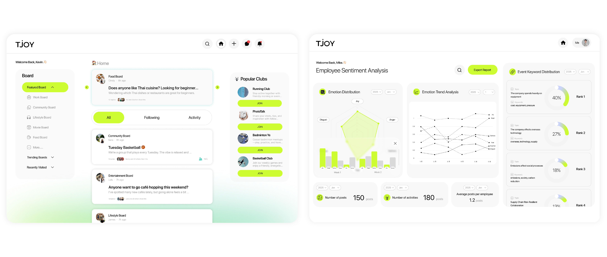
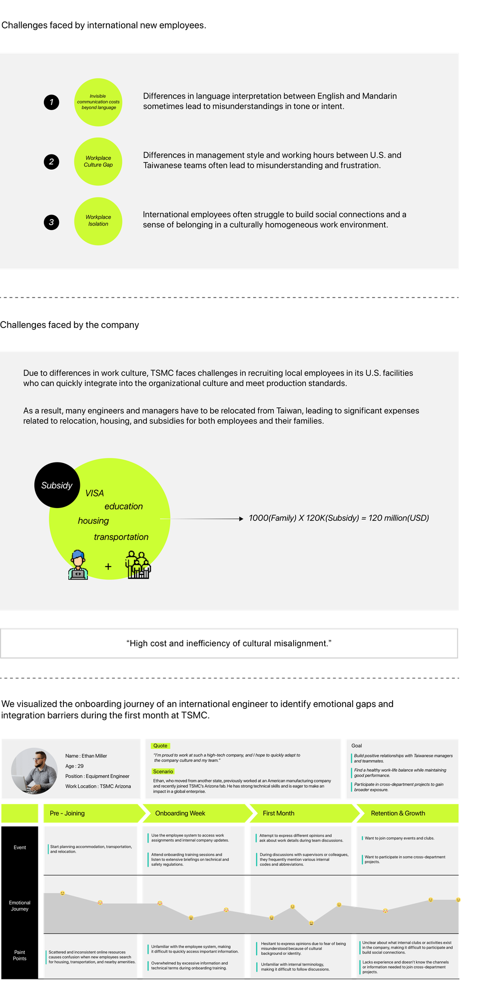

TJOY
2025 Meichu Hackathon - TSMC Challenge
SUMMARY
TJOY is a cross-cultural networking platform that fosters mutual understanding among employees and empowers business decisions through data analytics. It helps international new hires integrate quickly into teams and workplace culture, while enabling companies to understand employee needs, optimize management processes, and reduce operational costs.
context
As TSMC expands globally and attracts more international talent, new hires face challenges in adaptation and cultural integration, while companies face new talent management bottlenecks.
At the 2025 Meichu Hackathon, TSMC invited teams to design a platform that enhances the onboarding experience for new employees. We chose to focus on the adaptation journey of international hires, exploring the real challenges they face in a cross-cultural workplace.
initial research
We gathered secondary research data, interviewed a team member with internship experience at TSMC, and held a discussion with a mentor from TSMC to understand the adaptation challenges faced by international new hires.

problem statement
Communication Barriers
Differences in language nuances and communication styles between Chinese and English often lead to misunderstandings and misinterpreted instructions.
Cultural Integration Challenges
Differences in workplace culture and social norms make it harder for new hires to build connections and
feel a sense of belonging.
Daily Life Difficulties
Relocated employees often struggle with housing, transportation, and daily arrangements due to fragmented information during onboarding.
Organizational Impact
As TSMC's culture and operations remain unfamiliar to many Americans, the company still relies on Taiwanese expatriates to support its U.S. sites.
The disconnect between fragmented living information and deep-seated cultural barriers restricts international talents from forming a profound identity with TSMC, ultimately obstructing the mutual alignment and cohesion between talent and organization.
hmw
How Might We...
Add your HMW statement here.
Full TJOY case study: https://wenyuanjui.framer.website/tjoy